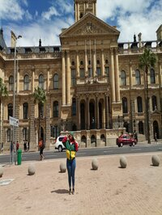
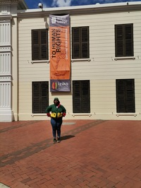

City Hall
City Hall is a large Edwardian building that was built in 1905 from honey-coloured oolitic limestone imported from Bath, England. Today it is used for ceremonies and high end events and functions. The tower houses a clock and a number of bells, modelled on the famous Big Ben.
Iziko Slave Lodge
This building housed more than 9000 slaves centuries ago. It has since changed names a few times, namely the Slave Lodge, Government Offices Building, Old Supreme Court, and as a South African Cultural History Museum to transform from a site of human wrongs to human rights
Castle of Good Hope
Castle of Good Hope was built by the Dutch East India Company between 1666 and 1679 to act as local headquarters for the South African Army in the Western Cape, and today houses the Castle Military Museum and ceremonial facilities for the traditional Cape Regiments